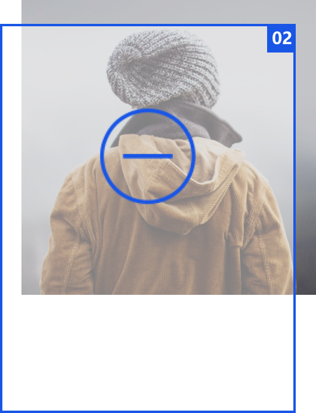
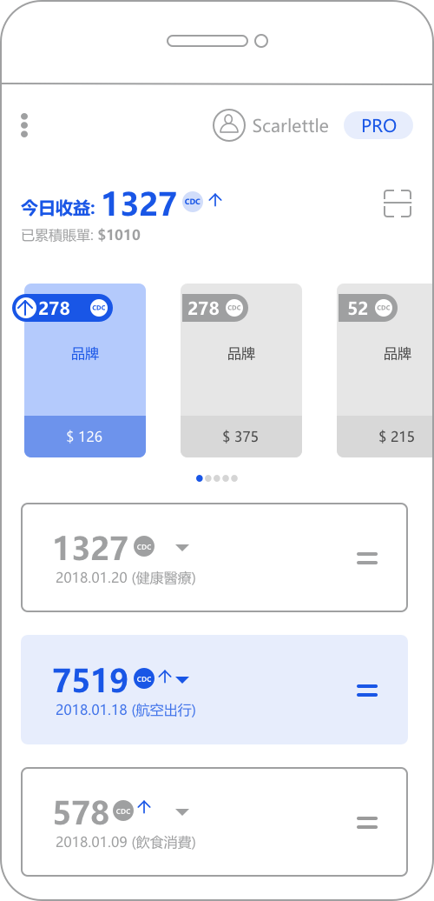
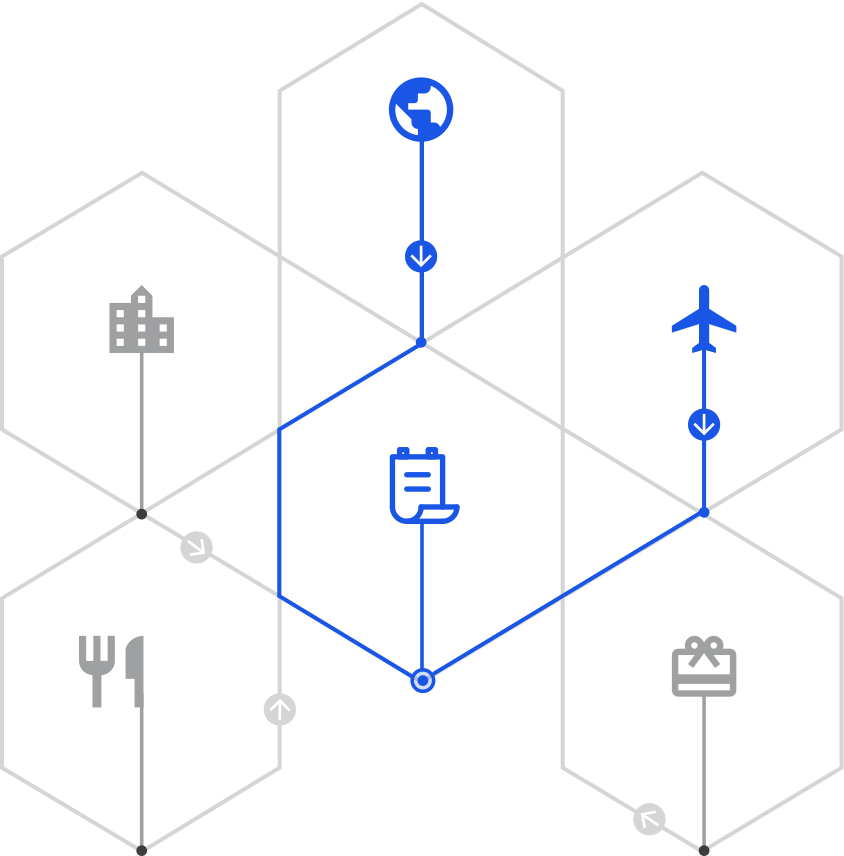
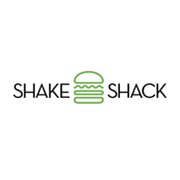

消費鏈-CDC
去中心化的全球消費數據資產交易的
公共區塊鏈生態平臺
公共區塊鏈生態平臺
用於解決消費者和商家消費數據的賬單價值動態評估、交易、使用、價值轉換以及廣告營銷推廣等問題。
CDC是這個網絡上面的基礎資產，是壹個加密的貨幣項目，而且是完全開源的。
與此同時，CDC正在開發壹個智能合約平臺。
它是全球第壹個以智能區塊鏈為研究基礎的去中心化消費數據分析的廣告營銷平臺。
CDC是這個網絡上面的基礎資產，是壹個加密的貨幣項目，而且是完全開源的。
與此同時，CDC正在開發壹個智能合約平臺。
它是全球第壹個以智能區塊鏈為研究基礎的去中心化消費數據分析的廣告營銷平臺。
中心化的數據存儲模式
讓大型平台對流量的壟斷與控制，
使得消費數據孤島化，
不能跨平台提取，直接導致消費數據片面缺乏真實性和完整性，
無法形成有價值的個人消費數據資產。
使得消費數據孤島化，
不能跨平台提取，直接導致消費數據片面缺乏真實性和完整性，
無法形成有價值的個人消費數據資產。
兩大核心模式
信用機制
通過用戶數據更新的頻次與完整度，被查詢和使用的次數記錄，獲取用戶的數據信用積分。

雙向匿名
對每個參與數據交易的成員在區塊鏈上實行雙向完全匿名記賬，可以配置是否需要匿名記賬，徹底保護交易雙方的隱私。
面向移动端策略

消費鏈CDC致力於通過去中心化的設計，
讓生態內的用戶持有基於區塊鏈的智能合約代幣方式，
利用其自身的行為對消費數據資產進行「投票」和交易，
以產生一個公開、公平、且民主的消費數據資產的生態系統。
以消費鏈CDC平台，建立完整的消費數據，
形成個人數據資產，通過區塊鏈實行雙向匿名規則，
保護交易雙方隱私，實時同步更新數據。

讓生態內的用戶持有基於區塊鏈的智能合約代幣方式，
利用其自身的行為對消費數據資產進行「投票」和交易，
以產生一個公開、公平、且民主的消費數據資產的生態系統。
以消費鏈CDC平台，建立完整的消費數據，
形成個人數據資產，通過區塊鏈實行雙向匿名規則，
保護交易雙方隱私，實時同步更新數據。
账户抽象层
消費鏈CDC認為
每一筆消費實際上都對應著某種形式的賬單，
全球意味著每天百億筆賬單。個人貢獻了消費數據痕跡，
但是沒有收穫數據積累的廣告收益，本質是不公平的。
每個人貢獻的賬單，消費痕跡越多，
獲得代幣獎勵越多，獲得數據被提取的廣告分成越多。
跨平台及向前兼容
CDC平台下設立專屬基金會，作為消費鏈CDC的技
術研發及產品運營方。
CDC基金會是圍繞CDC幣生態而運營的「典型」組
織之一；也會自己孵化運營優質的消費數據資產，
相當於優質消費數據商家的運營公司也會自己創造
消費數據；會建立第一個基於CDC的運營公司以示
範給生態未來的參與者。
CDC基金會和其他組織一樣，在整個生態體系里，
擁有同樣的權利和責任。
CDC基金會跟全球一線的餐飲娛樂、交通出行、文
化體育、健康教育等公司合作，為它們的消費數據
資產提供基於消費鏈CDC的點對點運營服務。

術研發及產品運營方。
CDC基金會是圍繞CDC幣生態而運營的「典型」組
織之一；也會自己孵化運營優質的消費數據資產，
相當於優質消費數據商家的運營公司也會自己創造
消費數據；會建立第一個基於CDC的運營公司以示
範給生態未來的參與者。
CDC基金會和其他組織一樣，在整個生態體系里，
擁有同樣的權利和責任。
CDC基金會跟全球一線的餐飲娛樂、交通出行、文
化體育、健康教育等公司合作，為它們的消費數據
資產提供基於消費鏈CDC的點對點運營服務。
合作生态伙伴
